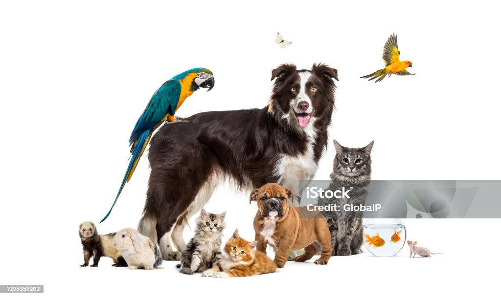

Evcil Hayvanların Bakımı Nasıl Yapılmalıdır?
Evcil hayvanlarının yaşam kalitesini arttırarak onlarla olan dostluk ve birlikteliğin uzun süreli olmasını sağlayabilmek her evcil hayvan sahibinin amacı ve hedefidir. Peki, evcil hayvanların yaşam kalitelerini arttıracak nitelikte bilinçli şekilde bakım rutinleri için neler yapılmalıdır? devamı için tıklayın
Yavru Köpek Eğitimi

Yavru köpek eğitimi, köpeğinizin 3 ay ile 6 ay arasında olduğu dönemde verilen bir eğitimdir. Bu eğitim ile, köpeğiniz için ev içerisindeki kurallarınızı koymanızı, bu kuralları nasıl uygulayacağınızı ve ayrıca köpeğinizin dışarıda nasıl davranacağını öğrenmesini sağlar. Bu eğitimin amacı köpeğiniz ile beraber daha kolay ve uyumlu bir şekilde yaşamanızı sağlamaktır devamı için tıklayın
Köpek Pirelerinin Üstesinden Gelme
Köpek sahipleri için köpek pireleri fazla sinir bozucu olabilmektedir. Pire ısırıkları acı verici olabilir ve bazı durumlarda hastalık bulaşmasına neden olur. Pire istilası kontrol altına alınabilir ve biraz çabayla tedavi edilebilir ve önlenebilir devamı için tıklayın